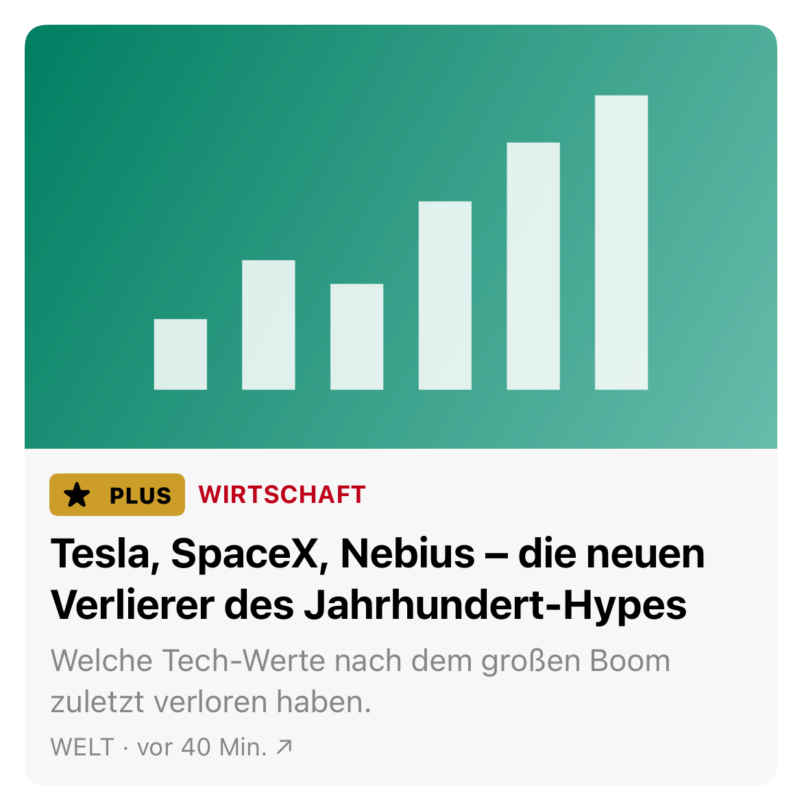
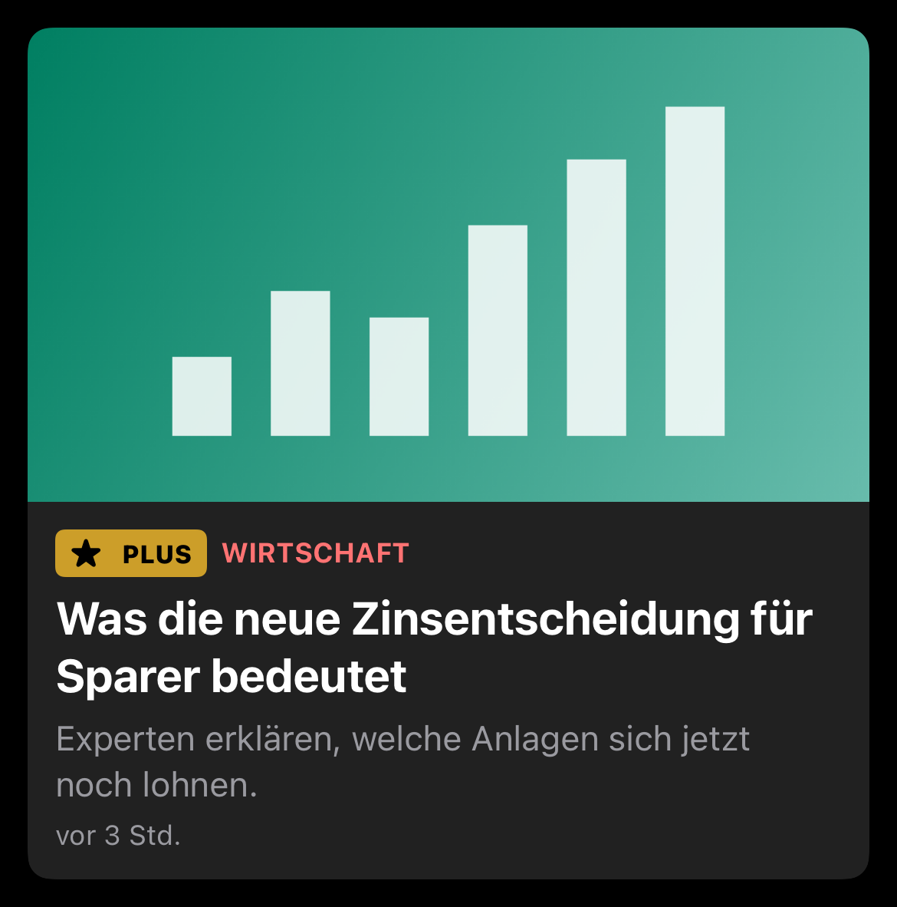
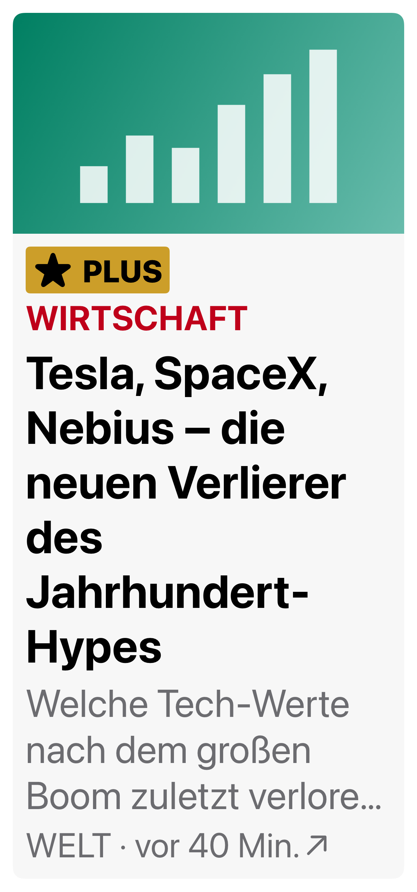
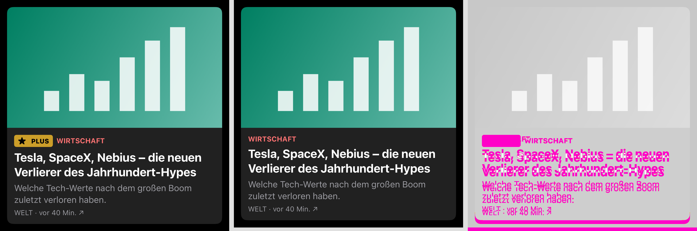
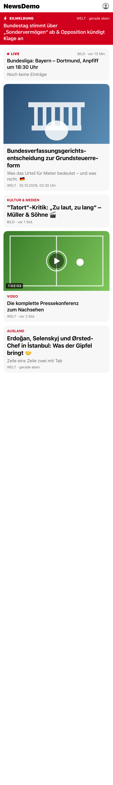
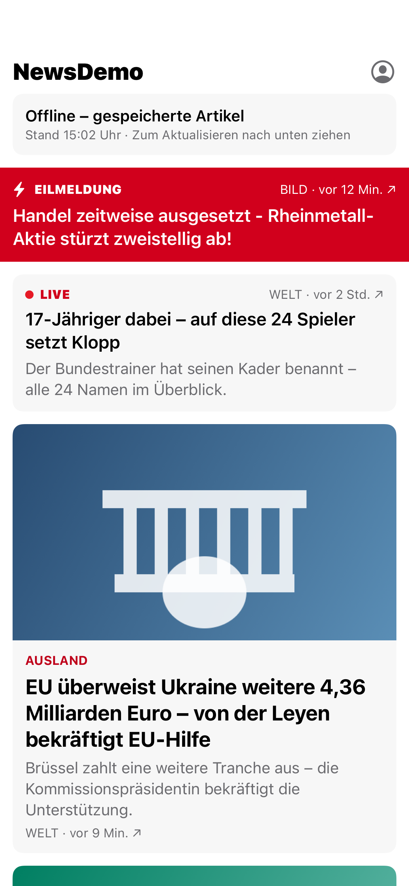

How the screenshot tests work
A guide for someone seeing this project for the first time: what problem it solves, how one test works, what happens on every pull request, and what to do in each situation. No prior knowledge of screenshot testing needed.
Contents
- The problem in one minute
- Words you'll hear
- How one screenshot test works
- Why the pictures don't go out of date
- The three kinds of tests
- What happens on every pull request
- Scenarios: what you see, what you do
- How small a difference counts
- Who does what
- Where everything lives
- Commands
- Android
- Questions people ask
1The problem in one minute
Why this exists.
News apps like BILD and WELT change all the time: new features, new designs, refactors. Some changes break the look of a screen without breaking any logic. A PLUS badge disappears, a headline gets cut off, a banner shrinks by a few points. Normal tests don't notice, because the code still "works". Readers notice.
Screenshot tests catch this. They take a picture of every important screen and compare it with a picture someone already approved. If even a small visible part changes, the test fails and shows exactly what changed.
The tricky part: the news changes every minute. If the test used live news, every picture would be different every time, and the tests would be useless. That's why the tests use fake, frozen data (section 4).
2Words you'll hear
Plain-language definitions. Everything else in this guide uses these words.
- Screenshot test
- A test that draws a screen, takes a picture of it, and compares it with an approved picture. Also called a "snapshot test".
- Golden
- The approved picture a screenshot test compares against. A PNG file stored in git, next to the tests. This project has 89.
- Fixture
- Fake data that looks exactly like what the real server sends (a JSON file). Also called "mock data". Every test reads the same fixtures.
- Diff
- The difference between the golden and the new picture. Shown as three pictures side by side: golden, new, and the changed pixels in magenta.
- Regression
- Something that used to work and is now broken, usually by accident.
- Simulator
- A virtual iPhone that runs on the Mac. The tests use one fixed model and iOS version, so every run renders exactly the same pixels.
- Pull request (PR)
- A proposed change to the code on GitHub. Others review it before it's merged into the main code.
- CI
- "Continuous integration": GitHub's own Mac runs every test automatically on every pull request. A red result blocks the merge.
- Code owner
- The person or team who must approve changes to certain files. Here, design or QA must approve any change to goldens.
- Record / re-record
- Creating new goldens from the current code. Only done when a visual change is intended.
- Tolerance
- How much invisible difference is allowed before a test fails. Here, only rendering noise a person can't see.
- Flaky test
- A test that sometimes passes and sometimes fails without any code change. The enemy of trust in tests.
3How one screenshot test works
Four steps, all inside the test. The app is never opened and nobody taps anything.
In the code
A whole test is a few lines (FeedScreenSnapshotTests.swift):
// ① load the fixture, ② build the real feed screen with it,
// ③+④ draw it and compare with the goldens (light, dark, largest text)
func test_feed_default() throws {
assertScreen(FeedView(state: .loaded(try Snap.store.feed("feed_default"))))
}
"Drawn in memory" means the screen is rendered straight into an image. No app starts, no network is used, and nothing appears on screen. That's why all 89 pictures take under a minute.
What a golden looks like
One test usually has several goldens: one per variant. This is the PLUS teaser card in light, dark and the largest text size:



test_teaserCard_premium.dark.png.4Why the pictures don't go out of date
The most common question: "the news changes every minute, so won't the goldens be wrong tomorrow?"
No. A golden belongs to a fixture, not to live news. Everything that could make two runs look different is frozen:
So "vor 9 Min." (9 minutes ago) shows "vor 9 Min." forever. If a picture changes, the only possible reason is that the code changed. That's what makes every failure worth looking at.
What about real content changing shape? New fields, missing images, weird characters from the CMS: that's tested separately, without pictures. Contract tests check the fixtures match the API, a fuzz test throws random broken data at the decoder, and special fixtures hold messy content (scenario E and F below).
5The three kinds of tests
Screenshots are one layer. Each layer catches what the others can't.
make ios-test runs the first two layers; make ios-ui-test runs the third. CI runs all three on every pull request.
6What happens on every pull request
The everyday workflow, from opening a pull request to merging it.
What the bot posts on a red pull request
A sticky comment with a table, so the reviewer knows what kind of change it is before opening a single picture:
29 changed (layout: 10, visible: 19, subtle: 0), 0 new | Snapshot | Kind | | test_breakingBanner_default.light.png | layout | | test_teaserCard_premium.dark.png | visible | | … | |
layout = the picture changed size (something moved or shrank). visible = pixels a person can see changed. subtle = only a tiny colour shift. These labels help sort; they never approve anything.
Two rules that never bend
1. Goldens never come from someone's laptop. Only CI records them, on its fixed machine. A laptop with a slightly different setup could produce slightly different pixels and cause false failures for everyone.
2. Approval is never automatic. A machine can say what changed; only a person can say whether it was meant to. A design or QA code owner signs off every golden change.
7Scenarios: what you see, what you do
Every situation you'll run into, from "nothing changed" to "it only fails on CI".
No visual change
A bug fix, a refactor, new logic: nothing on screen changes.
An unintended change
A refactor accidentally drops the PLUS badge.
Scenario B in real life: the diff for the missing PLUS badge
From the deliberate regression in this project (demo/regression, PR #1). Left: the golden. Middle: the new picture. Right: changed pixels in magenta.

An intended change
Design wants rounder cards. Many pictures change on purpose.
record-snapshots label. CI re-records, proves the new goldens pass, and pushes them as a "snapshot-bot" commit. A design/QA code owner approves. Merge. (PR #2 in this project.)A new screenshot test
You add a test for a new screen or state. It has no golden yet.
make ios-record-missing (records only new tests), look at the new pictures, commit them. For the final version, let CI record via the label, like scenario C.The server sends a new shape of data
A new field, a renamed field, a missing image.
/fixtures, update the code, then re-record any pictures that changed because of it (scenario C).Strange text from the CMS
HTML entities like &, line breaks inside headlines, emoji, an empty live ticker, an hour-long video.
feed_hostile_content.json and its goldens. If the cleanup breaks, those pictures fail.Fails on CI, passes locally
Usually a different simulator or iOS version.
ios-snapshot-diffs artifact from the run (the bot comment already says what kind of change). Use the same pinned simulator locally (scripts/ios-sim.sh creates it) to reproduce exactly.A difference nobody can see
Tiny anti-aliasing differences between graphics chips.
Fails sometimes, passes sometimes
Usually a test racing an animation or a slow machine.
No connection
The reader loses signal after the feed loaded.
Messy content, cleaned

Offline with saved articles

8How small a difference counts
"Do two pictures have to match pixel for pixel?"
Almost. The comparison uses a perceptual precision of 0.98: each pixel may differ by an amount the human eye can't see (about ΔE 2, a standard measure of colour difference). That absorbs graphics-chip noise.
Anything beyond that fails, however small. A 2-point shift and a missing badge are both "small", and both are bugs. A pixel count can't tell whether a change was intended, so a person always decides.
The one blind spot, and how it's covered: a colour change smaller than the eye can see (e.g. a very slight brand-colour tweak) passes the tolerance. That's why colour tokens have their own contrast tests, and design reviews any change to them.
9Who does what
Developers
Write and maintain the tests with the feature, like any other test. Fix the code when a diff shows a bug.
QA
Owns the system around the tests: fixtures, CI, the diff report, flaky-test quarantine, and the strategy. Co-approves golden changes.
Design
Approves every golden change as a code owner: "yes, this is what it should look like now".
10Where everything lives
Task/ ├── fixtures/ fake API data every test reads (shared by iOS and Android) │ ├── feed/*.json default, edge cases, empty, messy content, long headlines │ └── images/ bundled images (never downloaded in tests) ├── ios/ │ ├── NewsKit/Sources/ the app's code: feed, account, games, paywall │ ├── NewsKit/Tests/ │ │ ├── NewsUISnapshotTests/ SCREENSHOT TESTS │ │ │ └── __Snapshots__/ the GOLDENS (89 approved PNGs) │ │ └── NewsCoreTests/ logic and contract tests (no pictures) │ └── UITests/ real-app tests + accessibility audit ├── scripts/ diff report, gallery, golden lint, simulator pinning ├── docs/regression/ the captured result of the deliberate regression ├── .github/workflows/ the CI pipeline ├── .github/CODEOWNERS who must approve golden changes ├── presentation/ this guide, the demo script, setup.sh └── artifacts/ OUTPUT of test runs (not in git, recreated by every run) ├── ios/diffs/index.html the diff report (only after a failing run) └── gallery/index.html every golden on one page
11Commands
Everything is one make command, run from the project folder. make help lists them.
| Command | What it does | When |
|---|---|---|
make ios-test | Draws every screen, compares with its golden, runs the logic tests. On failure: artifacts/ios/diffs/index.html | After any change (< 1 min) |
make ios-ui-test | Taps through the real app + accessibility audit | Before merging (~5 min) |
make gallery | Every golden on one page: artifacts/gallery/index.html | Design review |
make lint-goldens | Fails on blank or broken goldens (a blank golden would pass while protecting nothing) | After recording |
make ios-record-missing | Records goldens only for new tests | After adding a test |
make ios-record | Re-records all goldens (CI does this via the label) | Intended visual change |
make ios-run | Opens the app in the simulator. Options: FIXTURE=…, OFFLINE=1, DROP_CONNECTION=1, TAB=…, SIGNED_IN=1 | To look at a state by hand |
make clean | Deletes build output and artifacts | When something seems stuck |
12Android
The demo is iOS, but the approach is the same on Android, and it was built first on both:
The same
Same fixture files, same test names, same goldens-in-git, same label-based re-record and code-owner approval. One regression fails in the same places on both platforms.
Different
The tool: Roborazzi on Robolectric, which draws Jetpack Compose screens on the JVM, so no emulator is needed. iOS has no equivalent, so it uses a simulator.
Do iOS and Android need to look identical? No. Each platform has its own goldens and is compared only with itself. Small native differences (fonts, system controls) are expected. What must match is the content and states, which the shared fixtures guarantee.
Details: section 10 of STRATEGY.pdf.
13Questions people ask
Is this using real data from the BILD/WELT API?
No. Fake data (fixtures) shaped exactly like the API. That keeps every run identical. Contract tests make sure the fixtures still match the real API's shape.
Does the test open the app?
The screenshot tests don't: they draw each screen straight from code in memory, on the pinned simulator, with nothing shown on screen. Only the UI tests (make ios-ui-test) launch the real app and tap through it.
Will the goldens be wrong tomorrow when the news changes?
No. Goldens belong to frozen fixtures, not live news. They only change when the code changes the look on purpose.
When do the tests run?
Locally whenever you run make ios-test. On GitHub automatically on every pull request, when a label is added, and on every push to main. A red result blocks the merge.
How long does it take?
Locally under a minute for screenshots + logic, ~5 minutes for UI tests. On GitHub 12–19 minutes for everything. At scale: only run affected modules, split across machines, move the slowest checks to a nightly run.
Who approves new goldens?
A design or QA code owner, on every pull request that changes them. AI or a bot may sort and summarise; a person always approves.
Can a developer just re-record to make a red test green?
They can add the label, but the pull request still can't merge without a design/QA code owner approving the new pictures. And CI records them, not the developer's laptop.
What if a golden is blank or broken?
A blank golden would make a test pass while protecting nothing. make lint-goldens rejects them, and CI runs it on every pull request.
What does a screenshot test NOT catch?
Behaviour (does tapping work?), accessibility (can VoiceOver reach it?), and colour changes below the tolerance. That's why there are UI tests, an accessibility audit and colour-contrast tests next to it.
Why is the demo iOS only?
The brief asks for a working demo on at least one platform and a strategy for both. The Android version was built too, then cut to keep the demo focused; the strategy describes it.
How would this roll out at BILD/WELT?
Start with one app and a few design-system components in report-only mode (failures shown, not blocking). Add the shared fixtures. Then make the check required. About four sprints.